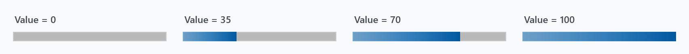
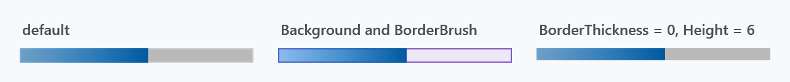
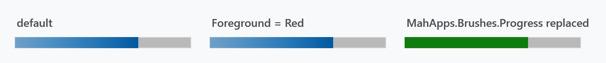
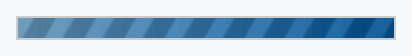
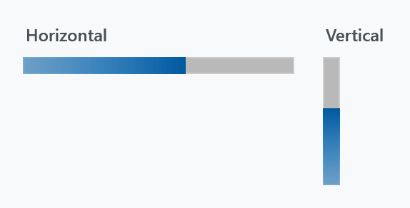

WPF's ProgressBar gets a flat track and a gradient indicator, plus a striped indeterminate state in place of the sliding block.

The gradient runs across the indicator, not across the track, so it is fully traversed at every value — the bar always ends in the darker blue.
The implicit style
Styles/Controls.xaml applies MahApps.Styles.ProgressBar to every ProgressBar. Merging that dictionary — which the quick start does — is all it takes:
<ResourceDictionary Source="pack://application:,,,/MahApps.Metro;component/Styles/Controls.xaml" />
<ProgressBar Width="190" Height="12" Value="70" />
There is no second style for ProgressBar. What the style sets beyond the template:
| Property | Set to | |
|---|---|---|
Background |
MahApps.Brushes.Gray5 |
the track |
BorderBrush |
MahApps.Brushes.Control.Border |
|
BorderThickness |
1 |
|
Foreground |
MahApps.Brushes.Highlight |
see the warning below — the template ignores it |
IsTabStop |
False |
|
Maximum |
100 |
|
MinHeight, MinWidth |
10 |
Colours
The track and its frame are ordinary template bindings, so Background, BorderBrush and BorderThickness work as you would expect:

<ProgressBar Width="190" Height="12" Value="55"
Background="#FFEDE7F6"
BorderBrush="#FF7E57C2" />
The indicator is a different matter:
Foreground does nothing on a ProgressBar. The template fills both the determinate indicator and the indeterminate stripes from {DynamicResource MahApps.Brushes.Progress} rather than from a template binding, so the style's own Foreground setter is dead and so is any value you set. This is unlike WPF's default template, and unlike MetroProgressBar, whose template does bind Foreground.

Because the lookup is a DynamicResource, the way to recolour a single bar is to put a MahApps.Brushes.Progress of your own in its resources:
<ProgressBar Width="190" Height="12" Value="70">
<ProgressBar.Resources>
<SolidColorBrush x:Key="MahApps.Brushes.Progress" Color="#FF107C10" />
</ProgressBar.Resources>
</ProgressBar>
The same key in App.xaml — or in the resources of any ancestor — recolours everything below it. MahApps.Brushes.Progress is a LinearGradientBrush in the theme, from MahApps.Colors.Highlight to MahApps.Colors.Accent3; a plain SolidColorBrush is a perfectly good replacement, as above.
Indeterminate

<ProgressBar Width="190" Height="12" IsIndeterminate="True" />
IsIndeterminate swaps the indicator for a full-width fill in the same progress brush, overlaid with a skewed, repeating gradient that scrolls sideways — diagonal stripes rather than WPF's single travelling block. The four stops of that overlay come from MahApps.Colors.ProgressIndeterminate1 through 4; they are translucent greys, so they darken and lighten whatever is underneath instead of bringing a colour of their own.
For an activity indicator that is not a bar, see ProgressRing.
Vertical

<ProgressBar Width="12" Height="90" Orientation="Vertical" Value="60" />
Orientation="Vertical" rotates the whole template by -90°, so the bar fills from the bottom up. Swap Width and Height when you turn it: the rotation is a LayoutTransform applied inside the template, so the control's own Width is still the thin dimension.
MetroProgressBar
MetroProgressBar is a separate control with its own template, not a variant of this style. It looks the same when determinate, but its indeterminate state is a row of five dots sweeping across — and it does honour Foreground. See MetroProgressBar.
<mah:MetroProgressBar Width="190" IsIndeterminate="True" />
It is also what the progress dialog uses.